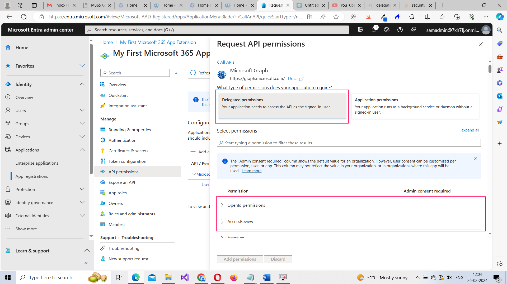

How to Register your app with Microsoft Entra ID?
The first step to creating your Microsoft 365 based app is to get it registered – just like you would do with any other API based app or extension. Usually this is done through automation – via a PowerShell script or something similar – which the tenant admin subscribing to your app has to initiate from his or her end. But for demo purpose, let’s do this manually.
Note: You should know how and where to register your app in Microsoft 365 so that you can setup your script, request for app permissions and manage your app within the Microsoft 365 tenant.
Introducing Microsoft Entra ID Admin Center
Microsoft Entra ID Admin Center (previously known as Azure Active Directory) is where you can register your app. This is where the identity of all the Microsoft 365 user accounts (relying on cloud-based Active Directory or on-premise Active Directory) are managed. This is going to manage your app’s identity too, meaning it is going to be responsible for authenticating and authorizing any Microsoft 365 app-based extension that you create.
Accessing Microsoft Entra ID Admin Center
You can access Microsoft Entra ID Admin Center using the following 2 ways:
Note: Read various Microsoft 365 Admin Centers and their purpose if you wish to know about the different admin centers that exist within Microsoft 365.
Registering Your Microsoft 365 Based App
Follow these instructions:
- Select Identity Applications App registrations.
-
Next click New registration button. This opens Register an application box shown in image 2.
-
Enter your app’s name. Select who can use your app. [You can create apps that can be used or consumed by a single tenant or multiple tenants. Since you are just getting started, go with the single tenant option]. Select the app type as Web and set the redirect URI. Redirect URI is the URI to which the authentication response is sent to, after Microsoft Entra ID successfully authenticates your app. Basically this is a path or location within your app’s server that is going to handle the authentication response. Example value could be: http://localhost:3000 as shown in the image. Click Register to register your app.
-
Once your app is registered, you are led to the app details page. Note down your tenant ID and application ID. We’ll be using this later to authenticate and authorize your application.
Generating Client Secret
If your app is going to be a web app, then you’ll need to generate a client secret. Follow these instructions to generate a client secret for your web app.
-
Select the Certificates & secrets tab and click the New client secret option. This opens the Add a client secret flyout. Enter a simple description and click the Add button.
Note: Go with the default Expires option for now.
-
The client secret is generated and gets listed on the page. Ensure you copy the client secret value and save it somewhere. Because the value gets hidden shortly after it is generated and the only way to retrieve it would be to generate a new client secret and delete the old one.
Configuring Your App Permissions
Next you should setup your app’s permissions. App permissions help you decide what type of permission your app needs (user level or application level), the resources your app needs access to (example: user profile, mail, files etc.,), and the kind of actions you wish to perform on them (read, write or both).
Click the API permissions option under Manage to configure your app’s permissions. The API permissions page opens as shown in image 2.
You’ll notice that a User.Read default permission has been setup for you (and that it does not require admin’s consent). This permission lets you read the user profile of the signed in user. Another thing you’ll notice is that this permission is listed under the Microsoft Graph category of permissions, implying that there are other APIs that you can make use of.
Note: Microsoft Graph API is the focus of this series. We’ll explore the other APIs later.
Two Types of Microsoft Graph API Permissions
Before you starting adding your app permissions, you should know about the two types of Microsoft Graph API permissions that exist. They are: Delegated permissions (user-level permissions) and Application permissions (application-level permissions).
-
Delegated permissions: These are permissions that let you access the Microsoft 365 tenant you are querying as a user. Delegated permissions are permissions that you can distribute among a bunch of users. Depending upon the permission being requested, the Microsoft 365 users have to consent to these permissions, before you can start querying the tenant for data.
-
Example for Delegated permission: Let’s say you are creating a simple in-house CRM solution for a sales team that is using Microsoft 365 to provide them with views that are not offered by default in the app. Then, each member of the sales team who is going to use your app becomes a delegated user who can consume delegated permissions assigned to him or her, once they consent to it.
-
Application permissions: These are application-level permissions. Best suited for applications running as a background service. Here too, depending on the permission being requested, the tenant admin has to consent to the app permissions, before your app can start querying the tenant for data.
-
Example for Application permission: Let’s say an organization using Microsoft 365 is not happy with the reports offered by Microsoft 365 and seeks for a more comprehensive reporting tool. Now a reporting tool like this has to run as a background service to query the tenant from time to time and offer real-time reports. If you are going to develop an app of this nature, your app will need application permissions assigned to it.
Let understand how you can configure both delegated and application permissions.
Configuring Delegated Permission
Follow these instructions to configure a delegated permission:
-
Click the Add a permission button. This opens the Request API permissions box shown in image 2. Select the Microsoft Graph option.
-
Next click on Delegated permissions option. The list of available API permissions opens up.

-
Let’s go with a simple read all users within the tenant permission (User.Read.All). To select this permission, you have to scroll down to User permissions section and then select User.Read.All option. Then click Add permissions button to add the permission.
-
You’ll be returned back to the API permissions page and the newly added User.Read.All appears on the list of configured permissions for your app. You’ll also note that this permission requires the tenant admin consent and that he or she is yet to grant the same.
Read delegated permissions for more info about how you can get access on behalf of a user for your app.
Configuring Application Permission
Note: It’s best to create another app and add this permission. Because it’s not good to have both delegated and application permissions for the same app. At least, not when you are learning the Microsoft 365 API basics.
-
Click the Add a permission button. This opens the Request API permissions box shown in image 2. Select the Microsoft Graph option.
-
Next click on Application permissions option. The list of available API permissions opens up.
-
Let’s go with a simple read all bookings within the tenant permission (Bookings.Read.All). To select this permission, you have to scroll down to Bookings permissions section and then select Bookings.Read.All option. Then click Add permissions button to add the permission.
Note: Bookings stands for appointments. So the Bookings.Read.All gets you all the appointments customers made with the organization.
-
You’ll be returned back to the API permissions page and the newly added Bookings.Read.All appears on the list of configured permissions for your app. You’ll also note that this permission requires the tenant admin consent and that he or she is yet to grant the same.
Read app permissions for more info about how you can get access without a user for your app.
What’s Next?
Now that we have configured permissions for our app, in the next article, let’s see how the tenant admin can consent to these permissions, so that your app can start making use of the data that can be obtained through these permissions.